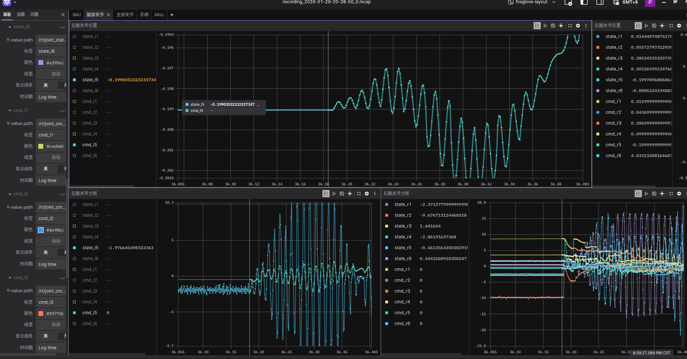

Foxglove 分析数据
Foxglove Studio 是支持 MCAP 格式的桌面/网页端可视化工具，可打开录制的 MCAP 文件查看话题、时间轴、图表等，用于数据跟踪分析。
可视化数据
打开 Foxglove Studio（网页版或桌面版）。
选择 Open local file （或 打开本地文件），选择录制的
.mcap文件。在左侧 Topics 或 数据源 中可看到录制到的话题列表（如
/rt/joint_state、/rt/imu_state等）。在 Panel 中添加需要的可视化（如 Raw Messages、Plot、3D 等），并选择对应话题与字段即可查看数据。

使用预定义布局
我们提供了预定义的 foxglove-lejulab-layout.json 布局文件，可以保存常用的面板配置，避免每次打开文件时重复设置，方便团队共享统一的分析视图。
在 Foxglove Studio 中打开 MCAP 文件后，点击右上角的 Layout 菜单
选择 Import layout （导入布局）
选择
foxglove-lejulab-layout.json文件
数据分析
使用 Plot 面板分析关节数据：
点击 Add panel 添加 Plot 面板
在面板设置中点击 Add series
选择话题路径，如
/rt/joint_state.q[0]表示第一个关节的位置可添加多个数据序列进行对比分析

参考
MCAP 数据格式：MCAP 数据格式说明